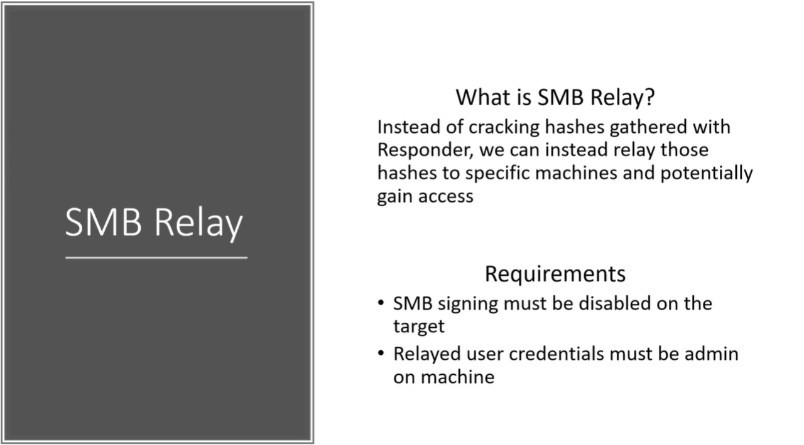

Requirements :
1st requirement
SMB signing is to be disabled on the target. (i.e. SMB is a packet level protocol)
- If SMB signing is enabled when we tried to relay credentials it will say Hey you are not really that person cuz the packet is not signed by you and i not gonna let you in.
- But if SMB signing is Disabled than it never checks. (i.e. it never checks for authenticity of where this is coming from there's the user there's the Hash and they have the persmission to do so)
2nd Requirement
- User Being relayed has to have admin rights credentials on that machine.
We cannot relay a credential that we captured from one machine back to the same machine (i.e. say we are dot 6 we can't relay that credentails to dot 6)
This has to be done on 2 separate machines.

- Will change the setting in the responder file (i.e. will turn off the SMB and HTTP)
- Will going to be listening and not responding on this server.
Responder to Capture and another tool to relay (i.e. psexec.py)

mine command didn't work with r

It will take the relay and passes that to the Target file (i.e. But how to identify the Target file)

We point to machine with responder listening and it can't access the machine.
DNS failes and responder kicks in and doesn't responds to that message and relay the credentials to this other machine.

Think as SAM the Shadow of the Windows world (i.e. user and hases of the local users and not the doman users.)
But we can take down the entire network with local users.
So we will not only dump the hashes but also get the shell.